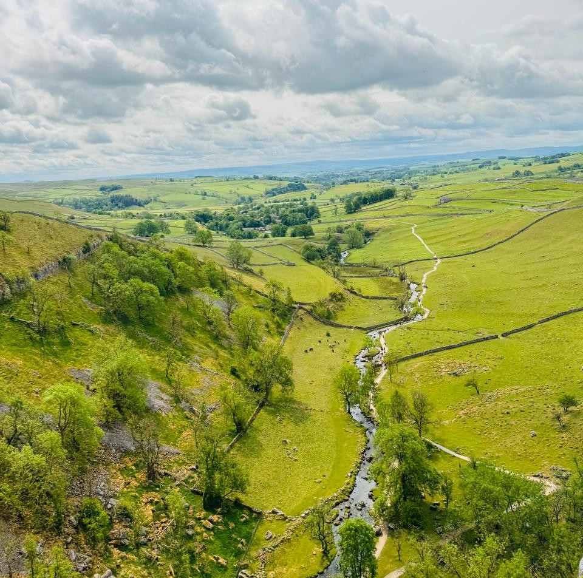
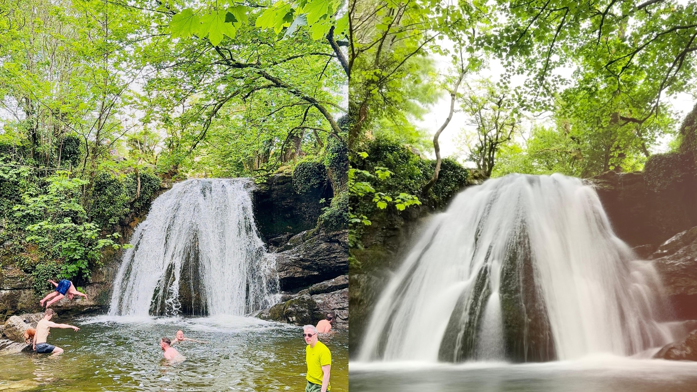
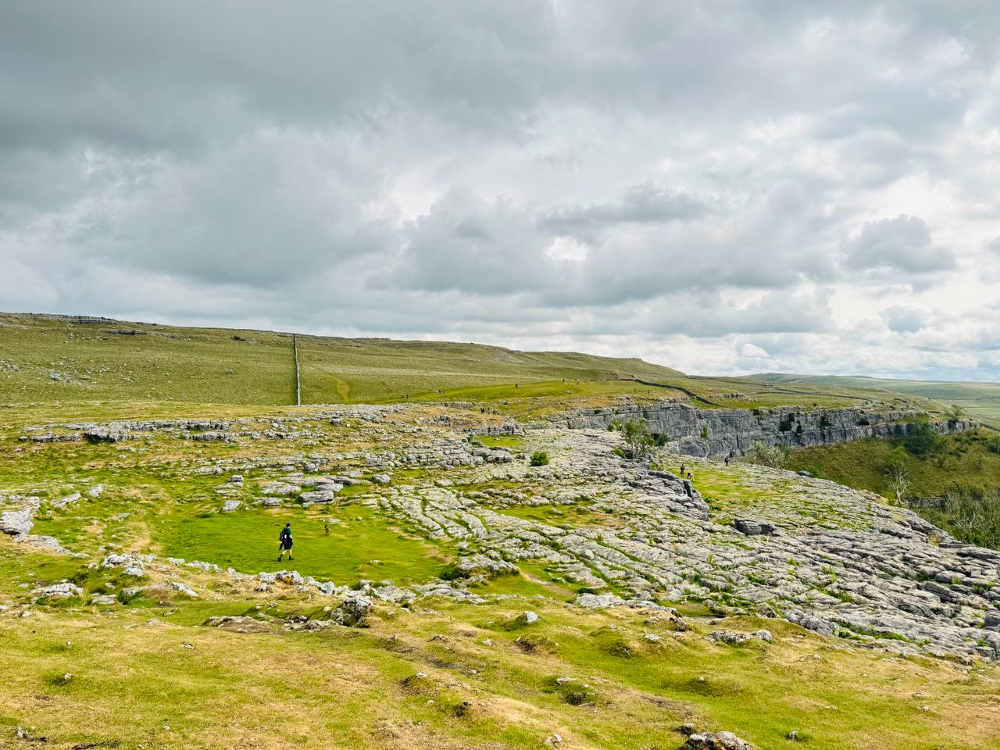
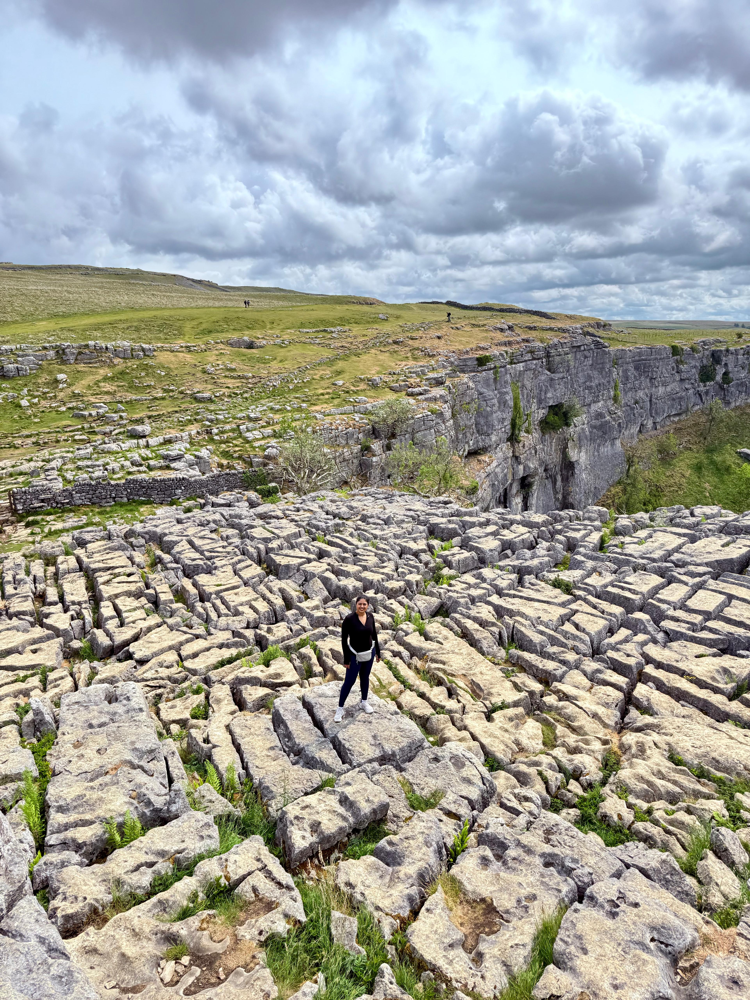
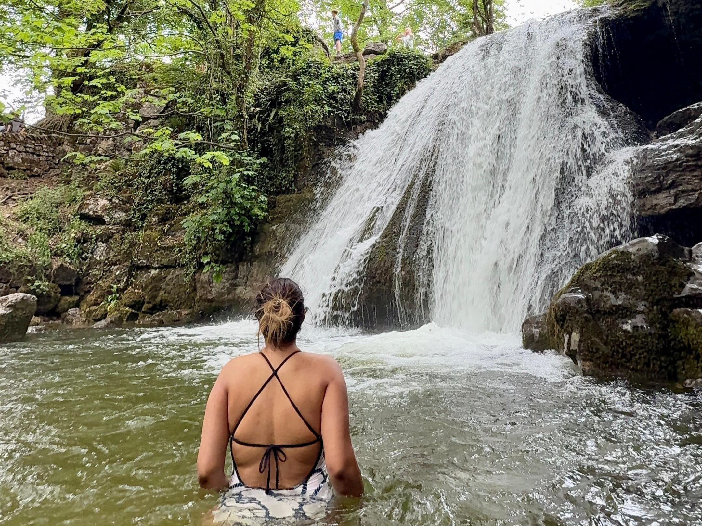
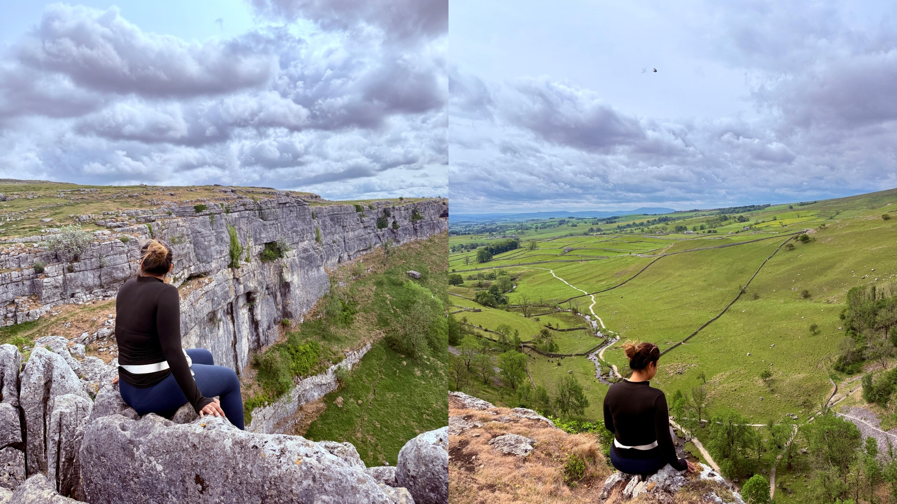
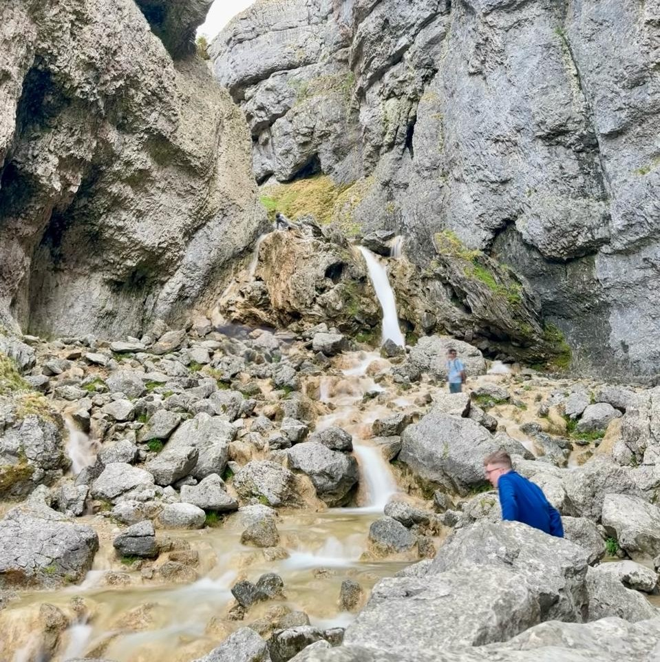
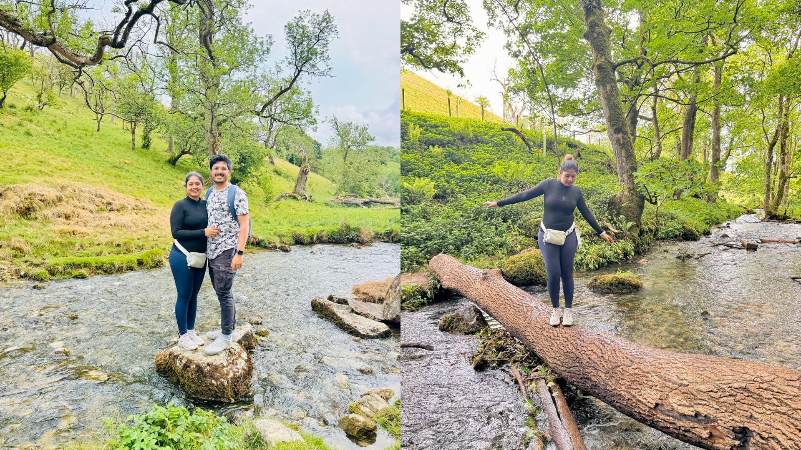

Not every trip needs a passport and a visa stamp. Sometimes the best day out is a couple of hours up the country with good company and a decent pair of walking shoes.
In May 2025, Dillon and I headed up to Leeds to see a friend who used to live there, and turned it into a day trip to Malham Cove — a gorgeous circular hike in the Yorkshire Dales. We came away with two waterfalls, a cliff you'll recognise from Harry Potter, a very English pub lunch, and a freezing-cold swim I flat-out refused to get out of. Here's how the day went.
On this page
Table of contents
Transport
Getting there (plan this bit properly)
Real talk first, because this is the part that'll make or break your day: Malham is stunning, but it's a genuine faff to reach without a car.
We based ourselves in Leeds, which is the easiest jumping-off point — it's close, and the connections are simplest from there. The route is: train from Leeds to Skipton, frequent on the Airedale line, and then a bus from Skipton to Malham.
Here's the catch — those buses are limited and run to set timings. On weekdays it's the 210/211 minibus, on Saturdays the DalesBus 75, with a few extra services added on summer Sundays and bank holidays. So you essentially have to plan your entire day around the outbound and the return bus.
There's no Uber out here, it's a long way from any station on foot, and if you miss the last bus back you're properly stuck. Check the live timetable before you go and build your day around it — get there, do the loop, and make sure you're back at the stop in time for your ride home.
Annoying? A little. Worth it? Completely.

The loop
The hike — a beginner-friendly loop with three big sights
The walk is a circular route, roughly 5 miles / 8km, starting from Malham village and taking in three highlights:
- Janet's Foss — a pretty little waterfall, named after a fairy queen who, as legend has it, lived in a cave behind the falls. Also the swim spot.
- Gordale Scar — the dramatic ravine I'd completely forgotten the name of, hemmed in by towering rock walls. Genuinely jaw-dropping in person.
- Malham Cove — the showstopper. A huge, curved limestone cliff around 70 metres high, with a famous craggy limestone pavement spread across the top.
I'd call it beginner-friendly — most of it is gentle, well-marked path — with one proper bit of effort: a climb up a few hundred steep stone steps to reach the top of the Cove. Take your time, but trust me, the view from up there is insane — the whole of the Dales rolling out in front of you.
One thing to pack: a windproof layer. You're up at height, so it gets seriously windy at the top, even on a sunny day.

Dramatic stop
Gordale Scar — the ravine that steals the scene
Gordale Scar is one of those places that feels much bigger in person than it looks in photos. The path pulls you into a dramatic limestone ravine, with towering rock walls rising on both sides and the whole place feeling a little prehistoric.
Even if you're not doing anything intense, it's worth taking a slow minute here. It breaks up the walk beautifully before the route eventually takes you towards the climb and the wide-open view from Malham Cove.

Film location
The Harry Potter bit (Potterheads, this one's for you)
Here's the surprise highlight: the limestone pavement at the top of Malham Cove is a real Harry Potter filming location — it's where Harry and Hermione pitch their tent in Harry Potter and the Deathly Hallows: Part 1.
Standing on those weathered slabs with the valley spilling out below, it's obvious why the location scouts fell for it. If you grew up on the films, it's a proper pinch-me moment.

Cold dip
The swim (bring your swimwear — I mean it)
Now, Janet's Foss. It's a small waterfall with a plunge pool beneath it, and the water is freezing. But if you're someone who doesn't mind a cold dip, I cannot recommend this enough — bring your swimwear and get in.
I was in that water for a good 45 minutes and genuinely didn't want to come out, even though it was icy. One of the best, most refreshing experiences of the whole trip.
Quick honest note: cold water is no joke — ease yourself in slowly rather than diving, don't go in alone if you're not used to it, and know your limits. But if you're up for it? Magic.

Pub stop
The very English finish
Once you've dried off and finished the loop, the village has a few lovely little pubs waiting for you — the perfect spot to collapse into a chair with a burger, a pile of fries, and a pint or a cider.
Hike, swim, pub: about as wholesomely English a day as it gets. We were buzzing.

Plan it
The practical bits
| When we went | May 2025 — sunny and glorious, but the weather and wind can turn fast, so come prepared. |
|---|---|
| Where | Malham, Yorkshire Dales National Park. |
| Base | We did it as a day trip from Leeds — easiest connections and a friend to visit. |
| Getting there | Train Leeds → Skipton, then a timed bus to Malham: 210/211 weekdays, DalesBus 75 Saturdays, and extra summer Sunday/bank-holiday services. No Uber out here — plan around the bus. |
| The walk | Around 5 miles / 8km circular loop; beginner-friendly apart from a steep stepped climb up the Cove. |
| Bring | Windproof layers, proper walking shoes, swimwear for Janet's Foss, water and snacks. The bus takes contactless, so you can just tap — no need for cash. |
| Best for | An easy, scenic day hike with a cold-water dip and a pub at the end. |

Real talk
Honest thoughts
This was such a good day. We got lucky with bright, sunny weather, the company was great, and the hike packs a ridiculous amount into a short loop — two waterfalls, a gorge, a Harry Potter cliff, and a swim, all before lunch.
It's the kind of day that reminds you that you don't always have to fly somewhere to feel like you've properly been somewhere.
If you're city-based like we are and craving a real hit of nature, Malham is well worth the journey north — just go in with your bus times sorted and your swimwear packed.
Tips
Tips if you're planning your own Malham day
- Plan around the bus timetable — this is genuinely the make-or-break. Check it before you go and don't miss the last one back.
- Base yourself in Leeds if you can — the connections are the simplest.
- Bring swimwear for Janet's Foss — freezing, but one of the best bits.
- Pack a windproof layer — the top of the Cove is exposed and breezy.
- Wear proper shoes — there's a steep stepped section and slippery limestone underfoot.
- Potterheads, head to the top of the Cove — that limestone pavement is the Deathly Hallows campsite.
- No need for cash on the bus — it's contactless, so you can just tap on.
- Time it for a dry, sunny day if you can — it transforms the whole experience.
